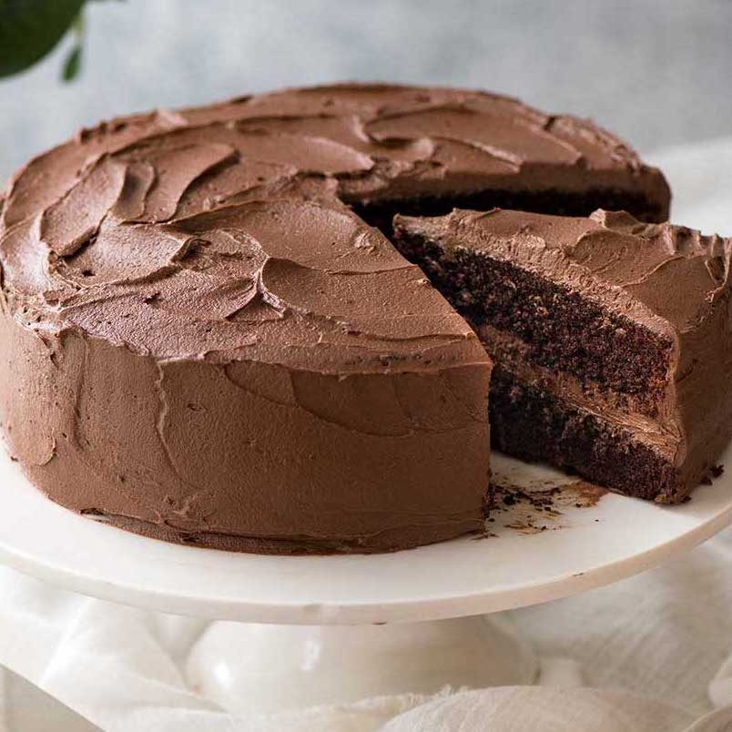

Delicious Chocolate Cake

Description
This chocolate cake recipe is perfect for any occasion. It’s moist, rich, and easy to prepare, making it a family favorite. Whether you're hosting a party or just satisfying a chocolate craving, this cake is sure to impress.
The combination of cocoa powder and a hint of vanilla creates a delightful balance of flavors, while the creamy frosting adds the finishing touch to this indulgent dessert.
Ingredients
- 1 3/4 cups (220g) all-purpose flour
- 3/4 cup (75g) unsweetened cocoa powder
- 2 cups (400g) granulated sugar
- 1 1/2 teaspoons baking powder
- 1 1/2 teaspoons baking soda
- 1 teaspoon salt
- 2 large eggs
- 1 cup (240ml) whole milk
- 1/2 cup (120ml) vegetable oil
- 2 teaspoons vanilla extract
- 1 cup (240ml) boiling water
Steps
- Preheat the oven to 350°F (175°C) and grease two 9-inch round baking pans.
- In a large bowl, combine the flour, cocoa powder, sugar, baking powder, baking soda, and salt.
- Add the eggs, milk, vegetable oil, and vanilla extract to the dry ingredients. Beat until the mixture is smooth and well combined.
- Stir in the boiling water carefully. The batter will be thin.
- Divide the batter evenly between the prepared baking pans.
- Bake for 30-35 minutes or until a toothpick inserted into the center comes out clean.
- Let the cakes cool in the pans for 10 minutes, then transfer them to a wire rack to cool completely.
- Frost the cake with your favorite frosting and enjoy!
Home